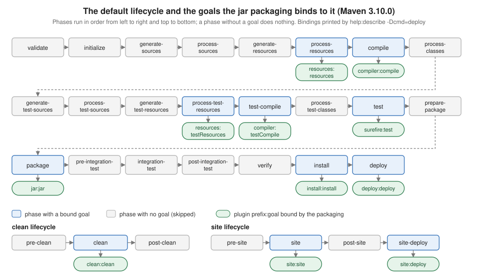

Maven Build Lifecycle
|
This content was generated with the assistance of AI and should be verified against the official documentation before being relied on in production. |
This page is written against Apache Maven 3.10.0. Every example was run on JDK 26 on 2026-10-16, in a scratch copy of the
tidepool project (a parent POM and the tidepool-model, tidepool-engine and tidepool-cli modules, with every build
plugin pinned in pluginManagement). Where the behaviour differs, the same command was also run on Maven 3.9.16 and on
Maven 4.0.0-rc-7 (a release candidate, not a final release), and the difference is stated. Paths in the console output
were shortened to /work/lifecycle/...; long output was filtered with grep and says so each time.
Maven is built around one idea: the way a project is built and distributed is defined once, as a lifecycle, and every project follows it. Where Ant makes you write the sequence of steps yourself (see Ant Targets & Extension Points) and Gradle computes a task graph from what the plugins register (see the Gradle build lifecycle), Maven ships a fixed, ordered list of phases, and plugins attach goals to those phases. The fundamentals page compares the three models. This page explains the Maven one in detail. For the surrounding pieces see POM Fundamentals, Plugins & Their Configuration and Running Maven.
Three lifecycles, phases and goals
Maven has three built-in lifecycles, defined in Maven itself (not in any plugin):
| Lifecycle | Purpose | Phases |
|---|---|---|
|
Removes what the previous build produced. |
|
|
Builds, tests, packages and distributes the project. This is the one people mean by "the lifecycle". |
23 phases from |
|
Generates the project web site and reports (see Site & Reporting). |
|
A phase is a named stage in a lifecycle. A phase does nothing by itself: it is a slot. A goal (a Mojo, "Maven plain
Old Java Object") is one task implemented by a plugin, for example compiler:compile. The work happens because goals are
bound to phases. When you ask for a phase, Maven runs every earlier phase of the same lifecycle in order, and in each
phase it runs the goals bound to it, in the order they are declared. A phase with no goal bound to it is skipped. A goal
can be bound to several phases (the compiler plugin’s compile goal is one binding, testCompile another), and a goal
bound to no phase can only be run by naming it on the command line.
The consequence for the command line is that you name the last phase you want and Maven does the rest. To get the
JAR run mvn package; to run the tests run mvn test; if you are not sure, the guide recommends mvn verify, which
also runs integration tests and any quality checks bound after them. A CI server that publishes typically runs
mvn clean deploy.
The phases of the default lifecycle
The default lifecycle has these phases, in this order. The right-hand column says what the phase is for; which goals do the work depends on the packaging (next section).
| Phase | What it is for |
|---|---|
|
Check that the project is correct and all information needed is available. |
|
Set up build state: initialise properties, create directories. |
|
Generate source code that will be compiled (for example from a grammar or a schema). |
|
Process the sources, for example filter or patch them. |
|
Generate resources that will be packaged. |
|
Copy and process the resources into the output directory ( |
|
Compile the main source code. |
|
Post-process the compiled classes, for example bytecode enhancement. The |
|
The same two steps for test sources. |
|
Generate and copy test resources into |
|
Compile the test sources. |
|
Post-process the compiled test classes. |
|
Run the unit tests with a suitable framework. The tests must not need the code to be packaged or deployed. |
|
Do whatever is needed just before packaging, for example unpacking or relocating. |
|
Take the compiled code and put it in its distributable format: JAR, WAR, EAR. |
|
Prepare the environment for integration tests: start a container, create a database. |
|
Run the integration tests against the packaged artifact. |
|
Tear down the environment prepared by |
|
Check the results of the integration tests and run quality checks. |
|
Install the package into the local repository ( |
|
Copy the final package to a remote repository for sharing. |
Source: Maven guide: Lifecycle Reference
The figure shows the same list with the goals that the jar packaging binds, plus the two small lifecycles. It is drawn
from the output printed by Maven itself, shown next.

Seeing the bindings: help:describe
The bindings are not hidden configuration to be memorised. The Help plugin prints them for the project in the current
directory, so you can always ask the Maven you are actually running. In tidepool-model (packaging jar):
mvn -B -pl tidepool-model help:describe -Dcmd=deploy[INFO] --- help:3.5.2:describe (default-cli) @ tidepool-model ---
[INFO] 'deploy' is a phase corresponding to this plugin:
org.apache.maven.plugins:maven-deploy-plugin:3.2.0:deploy
It is a part of the lifecycle for the POM packaging 'jar'. This lifecycle includes the following phases:
* validate: Not defined
* initialize: Not defined
* generate-sources: Not defined
* process-sources: Not defined
* generate-resources: Not defined
* process-resources: org.apache.maven.plugins:maven-resources-plugin:3.5.0:resources
* compile: org.apache.maven.plugins:maven-compiler-plugin:3.16.0:compile
* process-classes: Not defined
* generate-test-sources: Not defined
* process-test-sources: Not defined
* generate-test-resources: Not defined
* process-test-resources: org.apache.maven.plugins:maven-resources-plugin:3.5.0:testResources
* test-compile: org.apache.maven.plugins:maven-compiler-plugin:3.16.0:testCompile
* process-test-classes: Not defined
* test: org.apache.maven.plugins:maven-surefire-plugin:3.6.0:test
* prepare-package: Not defined
* package: org.apache.maven.plugins:maven-jar-plugin:3.5.1:jar
* pre-integration-test: Not defined
* integration-test: Not defined
* post-integration-test: Not defined
* verify: Not defined
* install: org.apache.maven.plugins:maven-install-plugin:3.2.0:install
* deploy: org.apache.maven.plugins:maven-deploy-plugin:3.2.0:deploy(The surrounding [INFO] banner lines were removed.) Eight of the 23 phases have a goal. The other 15 exist so that
plugins you add, such as the Failsafe plugin in integration-test, have a place to attach. -Dcmd accepts a phase
(deploy, compile), a prefix:goal, or a prefix:goal with a version; for the clean and site lifecycles it lists that
lifecycle instead:
mvn -B -pl tidepool-model help:describe -Dcmd=clean
mvn -B -pl tidepool-model help:describe -Dcmd=site[INFO] 'clean' is a phase within the 'clean' lifecycle, which has the following phases:
* pre-clean: Not defined
* clean: org.apache.maven.plugins:maven-clean-plugin:3.5.0:clean
* post-clean: Not defined
[INFO] 'site' is a phase within the 'site' lifecycle, which has the following phases:
* pre-site: Not defined
* site: org.apache.maven.plugins:maven-site-plugin:3.22.0:site
* post-site: Not defined
* site-deploy: org.apache.maven.plugins:maven-site-plugin:3.22.0:deploySource: Help plugin: help:describe
Where the plugin versions in the bindings come from
The versions in the listing (compiler 3.16.0, surefire 3.6.0, jar 3.5.1) are not in the jar packaging definition as
free choices: Maven ships with a default version for each plugin it binds, and the pluginManagement of the tidepool
parent pins the same ones explicitly. Without a pin you get whatever the running Maven carries, which differs between
releases. Running help:describe -Dcmd=deploy in a bare project (no parent, no pluginManagement) on three Mavens:
| Goal | Maven 3.9.16 | Maven 3.10.0 | Maven 4.0.0-rc-7 |
|---|---|---|---|
|
3.4.0 |
3.5.0 |
not listed (the build ran the version pinned in |
|
3.15.0 |
3.16.0 |
3.16.0 |
|
3.5.4 |
3.6.0 |
3.6.0 |
|
3.5.0 |
3.5.1 |
3.5.1 |
|
3.1.4 |
3.2.0 |
3.2.0 |
|
3.15.2 |
3.16.0 |
not listed |
So the same untouched POM compiles with a different compiler plugin on 3.9.16 and on 3.10.0. The cure is to pin every
plugin version, as described in Plugins & Their Configuration. The authoritative
list for a release is its core reference page, default-bindings.html, generated from the same table.
A real build, phase by phase
Running the whole lifecycle up to verify on one module (output filtered to the lines that show which goal ran in which
phase, plus the test summary; the full log is longer):
mvn -B -pl tidepool-model clean verify[INFO] --- clean:3.5.0:clean (default-clean) @ tidepool-model ---
[INFO] Deleting /work/lifecycle/tidepool-model/target
[INFO] --- resources:3.5.0:resources (default-resources) @ tidepool-model ---
[INFO] Copying 1 resource from src/main/resources to target/classes
[INFO] --- compiler:3.16.0:compile (default-compile) @ tidepool-model ---
[INFO] Compiling 4 source files with javac [debug release 21] to target/classes
[INFO] --- resources:3.5.0:testResources (default-testResources) @ tidepool-model ---
[INFO] skip non existing resourceDirectory /work/lifecycle/tidepool-model/src/test/resources
[INFO] --- compiler:3.16.0:testCompile (default-testCompile) @ tidepool-model ---
[INFO] Compiling 1 source file with javac [debug release 21] to target/test-classes
[INFO] --- surefire:3.6.0:test (default-test) @ tidepool-model ---
[INFO] Running io.tidepool.model.HeightTest
[INFO] Tests run: 1, Failures: 0, Errors: 0, Skipped: 0, Time elapsed: 0.025 s -- in io.tidepool.model.HeightTest
[INFO] --- jar:3.5.1:jar (default-jar) @ tidepool-model ---
[INFO] Building jar: /work/lifecycle/tidepool-model/target/tidepool-model-1.0.0-SNAPSHOT.jar
[INFO] BUILD SUCCESSRead each --- plugin:version:goal (execution-id) @ project --- line as "this goal, from this plugin version, runs now,
under this execution id, for this module". The order is the lifecycle order: clean first (it is in a different lifecycle
and was named first), then the default lifecycle phases up to verify. There is no line for validate, initialize or
verify because nothing is bound there. On the whole tidepool reactor the same sequence repeats for each module, in
dependency order (tidepool-model, then tidepool-engine, then tidepool-cli; the parent has pom packaging and only
has install and deploy, see below).
Bindings per packaging
What happens in each phase is decided by the project’s <packaging>. The packaging is a named lifecycle mapping: it says
which goals to bind to which phases. This is why a war project, a pom project and a plain jar all use the same
mvn verify command and still do different work. The listings below are the lines of help:describe -Dcmd=deploy
that are not Not defined, run in a minimal POM of each packaging on Maven 3.10.0 (the Not defined lines were removed
with grep -v).
jar
(Printed above.) process-resources, compile, process-test-resources, test-compile, test, package, install
and deploy.
war
* process-resources: org.apache.maven.plugins:maven-resources-plugin:3.5.0:resources
* compile: org.apache.maven.plugins:maven-compiler-plugin:3.16.0:compile
* process-test-resources: org.apache.maven.plugins:maven-resources-plugin:3.5.0:testResources
* test-compile: org.apache.maven.plugins:maven-compiler-plugin:3.16.0:testCompile
* test: org.apache.maven.plugins:maven-surefire-plugin:3.6.0:test
* package: org.apache.maven.plugins:maven-war-plugin:3.5.1:war
* install: org.apache.maven.plugins:maven-install-plugin:3.2.0:install
* deploy: org.apache.maven.plugins:maven-deploy-plugin:3.2.0:deployIdentical to jar except that package runs the WAR plugin.
pom
* install: org.apache.maven.plugins:maven-install-plugin:3.2.0:install
* deploy: org.apache.maven.plugins:maven-deploy-plugin:3.2.0:deployA project with pom packaging has no sources and produces no JAR: it only installs and deploys its own POM. That is
what the tidepool parent and the BOM are. Compile, test and package are skipped because nothing is bound to them,
which is also why a parent POM builds in milliseconds in a reactor. Plugins you bind yourself still run in a pom project,
which is how an aggregator can run, for example, an enforcer check once for the whole build.
maven-plugin
* process-resources: org.apache.maven.plugins:maven-resources-plugin:3.5.0:resources
* compile: org.apache.maven.plugins:maven-compiler-plugin:3.16.0:compile
* process-classes: org.apache.maven.plugins:maven-plugin-plugin:3.16.0:descriptor
* process-test-resources: org.apache.maven.plugins:maven-resources-plugin:3.5.0:testResources
* test-compile: org.apache.maven.plugins:maven-compiler-plugin:3.16.0:testCompile
* test: org.apache.maven.plugins:maven-surefire-plugin:3.6.0:test
* package: org.apache.maven.plugins:maven-jar-plugin:3.5.1:jar
* install: org.apache.maven.plugins:maven-install-plugin:3.2.0:install
* deploy: org.apache.maven.plugins:maven-deploy-plugin:3.2.0:deployThe one addition over jar is plugin:descriptor in process-classes: after compilation it scans the classes for
@Mojo annotations and writes META-INF/maven/plugin.xml. That is the reason that phase exists. The page
Writing Maven Plugins uses this packaging for the tidepool check-stations goal.
ear
* generate-resources: org.apache.maven.plugins:maven-ear-plugin:3.4.0:generate-application-xml
* process-resources: org.apache.maven.plugins:maven-resources-plugin:3.5.0:resources
* package: org.apache.maven.plugins:maven-ear-plugin:3.4.0:ear
* install: org.apache.maven.plugins:maven-install-plugin:3.2.0:install
* deploy: org.apache.maven.plugins:maven-deploy-plugin:3.2.0:deployAn EAR has no code of its own, so there is no compile or test: the EAR plugin generates application.xml early and
assembles the archive in package.
ejb and rar
The same command on ejb and rar projects shows package bound to maven-ejb-plugin:3.3.0:ejb and
maven-rar-plugin:3.1.0:rar (only the package binding was checked in these two). Other packagings come from plugins or
extensions (for example maven-archetype, bundle, bom in Maven 4): a packaging type is just a name that some plugin
registers a lifecycle mapping for, which is why you may need <extensions>true</extensions> on the plugin that defines it.
Phases and goals on the command line
You can mix phases and goals on one command line. They run left to right, and a phase runs all earlier phases of its
lifecycle first. The guide’s example, on tidepool-model (output filtered):
mvn -B -pl tidepool-model clean dependency:copy-dependencies package[INFO] --- clean:3.5.0:clean (default-clean) @ tidepool-model ---
[INFO] --- dependency:3.11.0:copy-dependencies (default-cli) @ tidepool-model ---
[INFO] --- resources:3.5.0:resources (default-resources) @ tidepool-model ---
[INFO] --- compiler:3.16.0:compile (default-compile) @ tidepool-model ---
[INFO] --- resources:3.5.0:testResources (default-testResources) @ tidepool-model ---
[INFO] --- compiler:3.16.0:testCompile (default-testCompile) @ tidepool-model ---
[INFO] --- surefire:3.6.0:test (default-test) @ tidepool-model ---
[INFO] --- jar:3.5.1:jar (default-jar) @ tidepool-model ---
[INFO] BUILD SUCCESSclean (and its predecessors in the clean lifecycle) ran first, then the goal, then package pulled in everything it
depends on in the default lifecycle. The goal ran before resources and compile: only a phase drags its
predecessors along, a goal runs exactly where you put it. dependency:3.11.0 was not pinned in the POM, so Maven picked the
latest release it found (see prefix resolution in
Plugins & Their Configuration).
A goal on its own (no phase) runs without the lifecycle at all, which is why mvn compiler:compile on a project whose
resources were never copied compiles only; mvn surefire:test runs the tests against whatever is already in target/
and does not compile first:
[INFO] --- surefire:3.6.0:test (default-cli) @ tidepool-model ---
[INFO] Tests run: 1, Failures: 0, Errors: 0, Skipped: 0, Time elapsed: 0.018 s -- in io.tidepool.model.HeightTestA mistyped phase is rejected with the list of valid ones (the Available lifecycle phases list below is what Maven 3.10.0
printed, re-wrapped here):
mvn -B compil[ERROR] Unknown lifecycle phase "compil". You must specify a valid lifecycle phase or a goal in the format
<plugin-prefix>:<goal> or <plugin-group-id>:<plugin-artifact-id>[:<plugin-version>]:<goal>. Available lifecycle phases
are: pre-clean, clean, post-clean, validate, initialize, generate-sources, process-sources, generate-resources,
process-resources, compile, process-classes, generate-test-sources, process-test-sources, generate-test-resources,
process-test-resources, test-compile, process-test-classes, test, prepare-package, package, pre-integration-test,
integration-test, post-integration-test, verify, install, deploy, pre-site, site, post-site, site-deploy. -> [Help 1]Phases not meant for the command line
The guide says that phases with hyphenated names beginning pre-, post- or process- are normally not called from the
command line: they sequence the build and produce intermediate results that are not useful on their own. The one that
causes real trouble is integration-test. Code coverage agents and container plugins (Tomcat, Cargo, Docker) bind goals to
pre-integration-test to start the environment and to post-integration-test to stop it; the verdict on the test results
is delivered later, in verify. If you stop at integration-test the environment may be left running, and, as the next
example shows, a failed integration test does not fail the build.
The tidepool integration tests use the Failsafe plugin (see
Integration Testing with Failsafe), which binds two goals:
failsafe:integration-test runs the tests but only records the result, and failsafe:verify reads the result and fails
the build. A scratch module contains a deliberately failing HeightIT test. First stopping at integration-test
(output filtered):
mvn -B integration-test[INFO] --- surefire:3.6.0:test (default-test) @ tidepool-exec-demo ---
[INFO] Tests run: 1, Failures: 0, Errors: 0, Skipped: 0, Time elapsed: 0.026 s -- in io.tidepool.model.HeightTest
[INFO] --- jar:3.5.1:jar (default-jar) @ tidepool-exec-demo ---
[INFO] --- jar:3.5.1:test-jar (test-classes-jar) @ tidepool-exec-demo ---
[INFO] --- failsafe:3.6.0:integration-test (default) @ tidepool-exec-demo ---
[ERROR] Tests run: 1, Failures: 1, Errors: 0, Skipped: 0, Time elapsed: 0.033 s <<< FAILURE! -- in io.tidepool.model.HeightIT
[ERROR] HeightIT.failsOnPurpose:10 expected: <2.0> but was: <1.5>
[ERROR] Tests run: 1, Failures: 1, Errors: 0, Skipped: 0
[INFO] BUILD SUCCESSBUILD SUCCESS with a failed test. Now mvn -B verify on the same module:
[INFO] --- failsafe:3.6.0:integration-test (default) @ tidepool-exec-demo ---
[ERROR] Tests run: 1, Failures: 1, Errors: 0, Skipped: 0, Time elapsed: 0.049 s <<< FAILURE! -- in io.tidepool.model.HeightIT
[INFO] --- failsafe:3.6.0:verify (default) @ tidepool-exec-demo ---
[ERROR] BUILD FAILURE
[ERROR] Failed to execute goal org.apache.maven.plugins:maven-failsafe-plugin:3.6.0:verify (default) on project tidepool-exec-demo: There are test failures.This is the reason for the guide’s advice: end with verify, never with integration-test, and never call integration-test
in a build that you rely on to gate a release. Also note the order in this output: the jar goal ran before
integration-test, because the integration tests need the packaged artifact, and the surefire unit tests ran before
jar.
Execution ids: default-compile and default-cli
Every execution of a goal has an execution id, and the id is the handle by which a POM can configure that one execution. Two ids are generated for you:
-
A goal bound by the packaging gets
default-<goalName>:default-resources,default-compile,default-testCompile,default-test,default-jar,default-install,default-deploy,default-clean. The log lines above show them in parentheses. -
A goal invoked from the command line gets
default-cli.
Because the ids are fixed, you can give the implied execution its own configuration without declaring a new execution:
<plugin>
<artifactId>maven-compiler-plugin</artifactId>
<version>3.16.0</version>
<configuration>
<showWarnings>true</showWarnings>
</configuration>
<executions>
<execution>
<id>default-cli</id>
<configuration>
<showDeprecation>true</showDeprecation>
</configuration>
</execution>
</executions>
</plugin>The plugin-level <configuration> applies to every execution of the plugin; the default-cli block applies only when you
type mvn compiler:compile. Running mvn -B -X compile compiler:compile (debug output, filtered to the configuration
lines of the two compiler executions) proves it:
[DEBUG] Configuring mojo execution 'org.apache.maven.plugins:maven-compiler-plugin:3.16.0:compile:default-compile' with basic configurator -->
[DEBUG] (f) showDeprecation = false
[DEBUG] (f) showWarnings = true
[DEBUG] Configuring mojo execution 'org.apache.maven.plugins:maven-compiler-plugin:3.16.0:compile:default-cli' with basic configurator -->
[DEBUG] (f) showDeprecation = true
[DEBUG] (f) showWarnings = trueThe lifecycle’s default-compile got the plugin-level showWarnings only; the command-line execution got both. To
configure the lifecycle execution itself, give an <execution> the id default-compile. For how plugin-level and
execution-level configuration merge, see Plugins & Their Configuration.
Running a goal or a phase twice
A goal named twice on the command line runs twice, with the same execution id (output filtered, tidepool-model):
mvn -B resources:resources resources:resources[INFO] --- resources:3.5.0:resources (default-cli) @ tidepool-model ---
[INFO] --- resources:3.5.0:resources (default-cli) @ tidepool-model ---Naming a goal that the lifecycle already runs gives two executions with different ids, because the lifecycle one is
default-compile and the command-line one is default-cli:
mvn -B compile compiler:compile[INFO] --- resources:3.5.0:resources (default-resources) @ tidepool-model ---
[INFO] --- compiler:3.16.0:compile (default-compile) @ tidepool-model ---
[INFO] --- compiler:3.16.0:compile (default-cli) @ tidepool-model ---A phase named twice runs its whole chain twice. This surprises people who expect Maven to remember what it has done (Ant’s targets run once per build; Maven’s phases, named twice, do not):
mvn -B compile compile[INFO] --- resources:3.5.0:resources (default-resources) @ tidepool-model ---
[INFO] --- compiler:3.16.0:compile (default-compile) @ tidepool-model ---
[INFO] --- resources:3.5.0:resources (default-resources) @ tidepool-model ---
[INFO] --- compiler:3.16.0:compile (default-compile) @ tidepool-model ---A phase also does not remember across calls: the first compile is not skipped because the classes already exist. Maven
relies on each plugin’s own staleness check (the compiler printed "Recompiling the module because of changed source code" in
the earlier build and decides for itself), not on lifecycle state. See
Build Automation Fundamentals for incremental builds in the three tools.
Binding your own goals
To add work to the build, declare an execution with a <phase> and one or more <goals>. Goals of the same phase run in
this order: those from the packaging first, then yours in the order you declare them (inherited ones from the parent
come before the child’s). A scratch module tidepool-exec-demo adds three things to the plain jar build:
<build>
<plugins>
<plugin>
<artifactId>maven-resources-plugin</artifactId>
<executions>
<execution>
<id>copy-stations</id>
<phase>generate-resources</phase>
<goals><goal>copy-resources</goal></goals>
<configuration>
<outputDirectory>${project.build.outputDirectory}/data</outputDirectory>
<resources>
<resource><directory>${project.basedir}/../data</directory></resource>
</resources>
</configuration>
</execution>
</executions>
</plugin>
<plugin>
<artifactId>maven-jar-plugin</artifactId>
<executions>
<execution>
<id>test-classes-jar</id>
<goals><goal>test-jar</goal></goals>
</execution>
</executions>
</plugin>
<plugin>
<artifactId>maven-install-plugin</artifactId>
<executions>
<execution>
<id>default-install</id>
<phase>none</phase>
</execution>
</executions>
</plugin>
</plugins>
</build>The first execution binds resources:copy-resources (not bound by the packaging) to generate-resources, to copy
data/stations.csv into the classes. The second declares an execution with no <phase>: jar:test-jar has a default phase
(package), so it runs there, after default-jar. The third rebinds the implied default-install execution to the phase
none, which unbinds it. mvn -B install then shows (filtered):
[INFO] --- resources:3.5.0:copy-resources (copy-stations) @ tidepool-exec-demo ---
[INFO] Copying 1 resource from ../data to target/classes/data
[INFO] --- resources:3.5.0:resources (default-resources) @ tidepool-exec-demo ---
[INFO] --- compiler:3.16.0:compile (default-compile) @ tidepool-exec-demo ---
[INFO] --- resources:3.5.0:testResources (default-testResources) @ tidepool-exec-demo ---
[INFO] --- compiler:3.16.0:testCompile (default-testCompile) @ tidepool-exec-demo ---
[INFO] --- surefire:3.6.0:test (default-test) @ tidepool-exec-demo ---
[INFO] --- jar:3.5.1:jar (default-jar) @ tidepool-exec-demo ---
[INFO] --- jar:3.5.1:test-jar (test-classes-jar) @ tidepool-exec-demo ---
[INFO] BUILD SUCCESScopy-stations ran at generate-resources, before the packaging’s own default-resources; test-classes-jar ran after
default-jar; and there is no install line although the command asked for install. Using <phase>none</phase>
on a default execution id is the supported way to switch off a goal that a packaging binds (for example to skip deploy
for one module of a reactor).
A goal that is not bound to any phase and has no default phase is not run by the lifecycle at all: giving it an
<execution> without a <phase> has no effect. Declaring the same plugin twice in <plugins> is not the way to get two
executions; use two <execution> elements. On Maven 3.10.0 a duplicate declaration is an error (see
Plugins & Their Configuration).
The clean and site lifecycles
mvn clean runs the clean lifecycle up to clean, which runs clean:clean and deletes target/ (the earlier build’s
Deleting /work/lifecycle/tidepool-model/target line). The clean lifecycle is separate from the default one, so mvn package
alone never cleans: that is why people write mvn clean package.
The site lifecycle builds the web site from the <reporting> section and the src/site content. mvn site on a scratch
project with the project-info reports configured (the Site plugin pinned to 3.22.0 in the POM; output filtered):
[INFO] --- site:3.22.0:site (default-site) @ tidepool-site-demo ---
[INFO] Rendering site for default locale
[INFO] Configuring report plugin maven-project-info-reports-plugin:3.9.0
[INFO] Configured 2 reports for maven-project-info-reports-plugin:3.9.0: summary, dependencies
[INFO] Skipping org.apache.maven.plugins:maven-project-info-reports-plugin:3.9.0:dependencies report
[INFO] Rendering 2 report documents
[INFO] Generating "Summary" report --- maven-project-info-reports-plugin:3.9.0:summary
[INFO] BUILD SUCCESS(The dependencies report was skipped because that scratch project has no dependencies.) site-deploy is the phase that
publishes the generated site, bound to site:deploy. Both the site and the clean lifecycles are independent of the
default one, so a build can combine them: mvn clean verify site.
Maven 3.10.0 added a switch, maven.site.lifecycle.disabled, for builds that never generate a site. With
-Dmaven.site.lifecycle.disabled=true the site lifecycle does not exist any more, and mvn site fails with the same
"Unknown lifecycle phase" error as a typo, whose list of available phases ends at deploy instead of site-deploy.
Maven 4 (release candidate): the lifecycle is a tree
Maven 4.0.0-rc-7 keeps the phases and bindings above working but redefines the lifecycle. This page only points at the changes; Maven 4 Lifecycle covers them. All of the following was run on rc-7.
-
A tree of phases instead of a flat list. Each phase gets a
before:and anafter:phase (for examplebefore:compile), and there are new names:sources,resources,ready,test-sources,test-resources,unit-test,buildand the umbrella phasesallandeach. The old names are aliases.mvn process-resourcesandmvn resourcesboth runresources:resources (default-resources). -
Before and after phases are always executed with their main phase. The Maven 4 notes warn about the changed meaning of the old
post-*phases. A plugin bound topost-cleandoes not run onmvn cleanin Maven 3 but does in Maven 4. The scratch project bindshelp:active-profilestopost-clean; Maven 3.10.0 printed nohelpline formvn clean, and only formvn post-clean, while 4.0.0-rc-7 printed it for both:
### Maven 3.10.0, mvn clean
[INFO] --- clean:3.5.0:clean (default-clean) @ tidepool-postclean-demo ---
### Maven 3.10.0, mvn post-clean
[INFO] --- clean:3.5.0:clean (default-clean) @ tidepool-postclean-demo ---
[INFO] --- help:3.5.2:active-profiles (after-clean) @ tidepool-postclean-demo ---
### Maven 4.0.0-rc-7, mvn clean
[INFO] --- clean:3.5.0:clean (default-clean) @ tidepool-postclean-demo ---
[INFO] --- help:3.5.2:active-profiles (after-clean) @ tidepool-postclean-demo ----
Explicit ordering inside a phase. Executions in one phase can be ordered with a number in square brackets after the phase name, a higher number meaning later. With two executions declared
firstthensecondand both invalidate, rc-7 ran them in declaration order; withvalidate[200]on the first andvalidate[100]on the second it ransecondbeforefirst. Maven 3.10.0 (and 3.9.16) silently ran neither: the phase namevalidate[200]is not a phase there, so the executions are simply never bound, and the build reportsBUILD SUCCESS. Do not use the bracket syntax in a POM that must also build on Maven 3. -
mvn allruns the whole chain. On rc-7mvn allran every goal up todeploy:deployand failed there with the usual "repository element was not specified in the POM inside distributionManagement element" error, which is the normal deploy failure for a project without a repository. -
help:describeis not fully Maven 4 aware. On rc-7help:describe -Dcmd=deployprinted the new phase list (before:all,sources,resourcesand so on) and did not list the resources plugin, althoughmvn verifyon rc-7 does runresources:resourcesandresources:testResources, exactly as on Maven 3.10.0. Treat the real build log as the truth. -
Duplicate plugin declarations fail. The lifecycle guide notes that declaring a plugin twice only warns in Maven 3 and fails in Maven 4. Run on the same POM with a duplicated
maven-compiler-plugin: Maven 3.9.16 printed the warning'build.plugins.plugin.(groupId:artifactId)' must be unique but found duplicate declarationand continued, while both Maven 3.10.0 and 4.0.0-rc-7 stopped with an error and "The build could not read 1 project". -
Maven 4 prints
[WARNING] Unable to find the root directory. Create a .mvn directory in the root directory ...for a project that is not inside a directory with.mvn; those lines were omitted from the Maven 4 output shown here.
According to the Maven 4 notes, the concurrent builder (-b concurrent) is the way to use the tree for finer-grained
parallelism, and the default behaviour stays like Maven 3 for compatibility (not run here).
Source: Maven 4: Lifecycle changes
Source: Maven 4: phase execution scope
Equivalents in Ant and Gradle
| Maven | Ant | Gradle |
|---|---|---|
A phase ( |
A target whose name you choose ( |
A lifecycle task such as |
A goal ( |
A task inside a target ( |
A task of a plugin ( |
Binding a goal to a phase |
Put the task in the target, or add the target to a |
|
Phases are fixed by Maven |
Targets are entirely up to the build file author. |
The graph is computed from task dependencies, not a fixed list. |
|
|
|
The shared lifecycle comparison is in Comparing Ant, Maven and Gradle, and the Java plugin tasks in Gradle Java Projects.